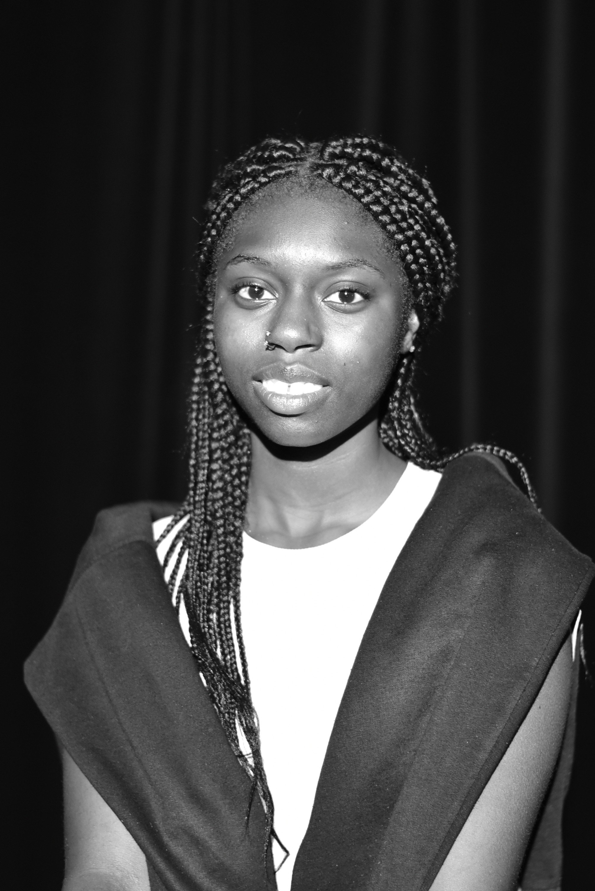

Qui suis-je ?
Étudiante en troisième année de BUT Information-Communication, parcours Information Numérique dans les Organisations, je m'intéresse particulièrement à la manière dont les personnes accèdent, comprennent et utilisent l'information. Mon parcours m'a progressivement orientée vers l'UX design, l'ergonomie, l'accessibilité numérique et l'inclusion.

Étudiante en 3ème année du BUT Information-Communication, parcours INFONUM
À l'IUT Bordeaux-Montaigne depuis 2023, je finalise mon cursus cette année avant de poursuivre en master dans le domaine de l'ergonomie, du numérique et de l'accessibilité.
- Anniversaire : 6 mars 2005
- Adresse mail : fanta.kouyate635@gmail.com
- Téléphone : 06 01 45 49 12
- Adresse : 33300 Bordeaux
- Âge : 21 ans
- Études : BUT Info-Com, 3ème année
- Objectif : Présenter les réalisations de mon parcours
Au fil de mes projets universitaires et de mes stages, j'ai développé des compétences en recherche documentaire, veille, analyse de données, architecture de l'information et valorisation de contenus. Ce qui m'intéresse aujourd'hui, c'est de concevoir des contenus et dispositifs numériques plus clairs, plus accessibles et mieux adaptés aux besoins des utilisateurs.
Mes Qualités & Atouts
Ces qualités reflètent ma façon de travailler : observer, comprendre les besoins des autres, organiser l'information et proposer des contenus utiles et accessibles.
À l'écoute
Une idée ou une envie en tête ? Je me rends disponible pour la comprendre et la réaliser de manière optimale.
Motivée
J'essaie d'atteindre mes objectifs de manière consciencieuse, peu importent les difficultés rencontrées en chemin.
Discrète
Vous pouvez compter sur ma discrétion : j'observe et j'analyse en profondeur avant de proposer des réponses ciblées.
Curieuse
Je m'intéresse au monde qui m'entoure, réalisant une veille active pour enrichir en permanence ma pratique du numérique.
Créative
J'aime imaginer de nouveaux visuels et concevoir des supports interactifs pour capter l'intérêt et simplifier les messages.
Empathique
Je perçois naturellement les besoins et les perspectives d'autrui, ce qui m'aide à concevoir des parcours utilisateur fluides.
Mon CV & Parcours
Au fil de ma formation, j'ai développé des compétences en recherche et analyse de l'information, en gestion de données, en conception numérique et en communication. Ces expériences m'ont permis de construire un parcours tourné vers l'accessibilité.
Profil
Fanta KOUYATE
Rendre l'information accessible et claire pour tous.
- 33300 Bordeaux
- 06 01 45 49 12
- fanta.kouyate635@gmail.com
- 21 ans
Études
BUT Information-Communication, parcours INFONUM
2023 - 2026
IUT Bordeaux-Montaigne, Bordeaux
Spécialisation dans l'organisation, le traitement de données, la veille documentaire, et la conception de sites web.
BAC STMG, mention Assez Bien
2022 - 2023
Lycée Condorcet, Bordeaux
Sciences technologiques du management et de la gestion.
Projet : Master Technologie, Ergonomie, Cognition et Handicap (TEC&H)
À partir de 2026
Poursuite d'études envisagée
Objectif d'approfondir mes connaissances autour du design d'inclusion, des normes RGAA/WCAG et de la cognition liée au handicap.
Expériences professionnelles
Stage : communication de marque
Avril - Mai 2026
SevenMates, marque de streetwear
- Création de supports de communication (plaquette commerciale, brand book, déclinaisons de logos).
- Réflexion sur la stratégie de communication globale et le positionnement de marque sur les réseaux sociaux.
- Participation à la sélection des produits et à l'accueil client.
Stage : recherche documentaire
Juin 2026
Direction de la documentation (DDOC), Conseil Départemental de la Gironde
- Réalisation d'une bibliographie thématique complète destinée aux assistants familiaux de la Gironde.
- Recherche, sélection, indexation et organisation de ressources documentaires d'accompagnement.
Stage : documentaliste (1ère année)
Mai 2024
Direction de la documentation, Conseil Départemental de la Gironde
- Gestion des prêts et retours, tri, rangement et indexation de nouveaux ouvrages physiques.
- Recherches documentaires simples et rédaction de notes de veille thématique.
Compétences
Voici les domaines de compétences développés au fil de ma formation universitaire, ainsi que les outils numériques que je maîtrise.
Mes domaines de compétences
Recherche & analyse de l'information
Collecte, vérification, indexation et croisement de sources pour produire une information fiable (OSINT, veille, recherche documentaire).
UX/UI, accessibilité & conception numérique
Conception de dispositifs numériques centrés utilisateur, structurés de manière logique et conformes à l'accessibilité universelle.
Gestion de projet & posture professionnelle
Organisation, collaboration et adaptabilité dans la conduite de projets en groupe ou lors de mes stages.
Gestion & valorisation
Gestion & valorisation de données
Traitement de jeux de données (Open Data) et transformation en contenus visuels clairs (datavisualisation, data journalisme, data art).
Communication, marque & production de contenus
Construction d'une identité de marque, diffusion de messages ciblés et production de contenus adaptés à des publics variés.
Outils maîtrisés
Mes projets
Les projets présentés ici illustrent mon intérêt pour la recherche d'information, l'analyse de données, la structuration de contenus, l'UX design et l'accessibilité numérique. Ils montrent mon évolution vers des dispositifs centrés sur l'humain et l'inclusion.
- Tous
- UX, accessibilité & numérique
- Recherche & information
- Données & datavisualisation
- Communication & valorisation
- Vidéos


{kind=link}
{kind=link}
{kind=link}
{kind=link}
{kind=link}
{kind=link}
{kind=link}
Enquête OSINT4FUN
OSINT / Résolution d'enquête
L'Écho des absents
OSINT / Conception d'enquête
Veille IA musicale
Veille stratégique / DM2i
Temps de parole femmes
SAE Open Data / Datavisualisation
Aides presse jeunesse
Data journalisme / Carrousel Instagram
Carte de vœux Data Art
Datavisualisation / Violences de rue
Cartographie DM2i
Datavisualisation / IA musicale
SevenMates Logo
Stage 3A / Identité de marque
Campagne fans - TSITP
Communication interculturelle
Réalisation Vidéo 1
Projet audiovisuel / Montage
Réalisation Vidéo 2
Valorisation de projet / Montage
Réalisation Vidéo 3
Image & Son / Narration
Rapport d'activité 2025-2026
Ce rapport retrace ma troisième année de BUT Information-Communication, parcours Information Numérique dans les Organisations. Il présente les enseignements, projets universitaires et expériences professionnelles qui ont contribué à construire mon projet d'études autour de l'ergonomie, de l'accessibilité numérique, de l'expérience utilisateur et de l'inclusion.
Ce que ce rapport met en avant
Une évolution vers l'accessibilité et l'UX
Mon parcours m'a permis de mieux comprendre l'importance de concevoir des contenus et des dispositifs numériques adaptés aux besoins des utilisateurs, notamment dans une logique d'inclusion.
Des compétences en information numérique
Recherche documentaire, veille, OSINT, open data, datajournalisme, architecture de l'information et valorisation des contenus font partie des compétences que j'ai consolidées cette année.
Un projet de poursuite d'études
Je souhaite poursuivre en master dans le domaine de l'ergonomie, du numérique, de la cognition et du handicap afin de contribuer à la conception de solutions plus accessibles.
Mots-clés de mon parcours
Axes principaux
Accessibilité numérique · UX design · Ergonomie · Inclusion · Handicap · Expérience utilisateur · Recherche documentaire · Analyse de données · Architecture de l'information · OSINT · Open data.
Consulter le rapport
Mon rapport d'activité complet sera disponible ici au format PDF dès sa publication.
Télécharger mon rapport d'activitéMe contacter
N'hésitez pas à me contacter pour toute collaboration, projet professionnel ou échange sur l'UX et l'accessibilité !
Adresse :
33300, Bordeaux, Nouvelle Aquitaine, France